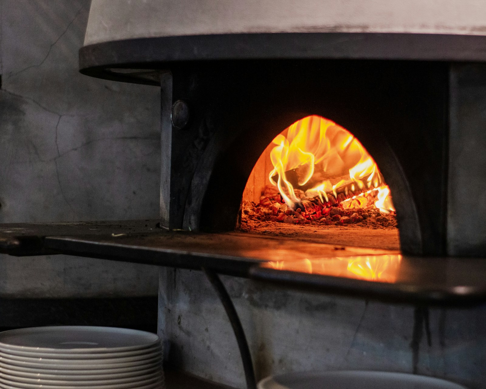

Pizzeria in de binnenstad van Harderwijk
Pizza di Mama
Knapperige pizza's met verse ingrediënten en diverse verse pasta's. Een zonnig terras, een gezellig restaurant en een snelle bezorgdienst.
Welkom bij Pizza di Mama
Op enkele minuten lopen van het Dolfinarium en de boulevard bevindt zich een gezellige pizzeria in de binnenstad van Harderwijk. Een authentieke pizzeria met een zonnig terras, gezellig restaurant en een snelle bezorgdienst.
Ons kindvriendelijke restaurant biedt u de mogelijkheid om voor een scherpe prijs gezellig te eten. De veelzijdigheid van onze keuken zal u ook zeker verrassen: knapperige pizza's met verse ingrediënten en diverse (verse) pasta's. Wij hebben voor ieder wat wils!
- Zonnig terrasen een gezellig restaurant
- Kindvriendelijkgezellig eten voor een scherpe prijs
- Snelle bezorgingzondag t/m vrijdag, 17.00 - 19.30 uur


Bezorgdienst
Zondag t/m vrijdag bezorgen wij van 17.00 tot 19.30 uur. Zaterdag bezorgen wij niet.
- Wij bezorgen uw pizza of pasta in verwarmde pizzaboxen binnen 30 à 45 minuten bij u thuis.
- Bij een bestelling wordt € 2,00 bezorgkosten in rekening gebracht.
- Geen contant geld in huis? Een deel van ons bezorgteam heeft een mobiel pinapparaat. Geef bij uw bestelling aan dat u wilt pinnen (kosten € 0,50 bij een bestelling onder de € 10,00).
Contact en reserveren
Pizza di MamaBruggestraat 12
3841 CP Harderwijk
0341 - 42 17 87
pizza@dimama.nl
Wilt u een tafeltje reserveren? Bel ons of stuur een bericht.
Bezorgtijden: zondag t/m vrijdag 17.00 - 19.30 uur.